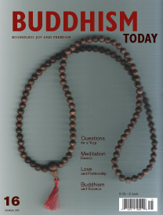

You can order this issue from the Diamond Way USA Dharma Shop.
Number 16 — Fall/Winter 2005
Features
H.H. the 17th Karmapa Trinlay Thaye Dorje Visits London
A photographic story prepared by Matthew Huddleston, Stephen James, and Joshua Johnson
Buddhism and Science: An Interview with Lama Ole Nydahl
Artur Przybyslawski
Love & Partnership
Karola Schneider-Waldner
An Interview with H.H. the 17th Karmapa Trinlay Thaye Dorje
Hannah Nydahl and Cristina Ferrando
The Rubin Museum and Jeff Watt
An interview by Jonathan Bradley
Departments
Letters to the Editor
Questions for a Yogi
Lama Ole Nydahl answers questions about Buddhism
Meditation Basics
Eric Gibson
Unsung Heroes of Active Compassion
Michael Fuchs and Steffen Gill